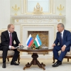
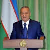
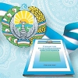

Siyosiy partiyalar o'rtasidagi raqobat – demokratik jamiyat ifodasi
Prezidentimiz Islom Karimov rahnamoligida huquqiy demokratik davlat va kuchli fuqarolik jamiyati barpo etish yo'lida keng ko'lamli islohotlar amalga oshirilmoqda. Bu jarayonda siyosiy partiyalarning rolini kuchaytirish, ijtimoiy-siyosiy va iqtisodiy taraqqiyotning ustuvor yo'nalishlarini belgilash hamda ro'yobga chiqarishda ularning ishtirokini kengaytirishga alohida e'tibor qaratilmoqda. O'zbekiston Respublikasining Konstitutsiyasi, «Davlat boshqaruvini yangilash va ...
O'zbekiston – Rossiya: strategik sheriklikni yanada mustahkamlash yo'lida

O'zbekiston Respublikasi Prezidenti Islom Karimovning taklifiga binoan Rossiya Federatsiyasi Prezidenti Vladimir Putin 10-dekabr kuni rasmiy tashrif bilan mamlakatimizda bo'ldi. Ko'ksaroy qarorgohida oliy martabali mehmonni rasmiy kutib olish marosimidan so'ng ikki davlat rahbarlari tor doirada muzokara o'tkazdi. – Rossiya Prezidentining ushbu tashrifini O'zbekiston – Rossiya siyosiy muloqotlari va turli ...
Mamlakatimizni demokratik yangilash va modernizatsiya qilishga qaratilgan taraqqiyot yo'limizni qat'iyat bilan davom ettirish – bosh maqsadimizdir

Prezident Islom Karimovning O'zbekiston Respublikasi Konstitutsiyasi qabul qilinganining 22-yilligiga bag'ishlangan tantanali marosimdagi ma'ruzasi Qadrli do'stlar! Muhtaram yurtdoshlar! Shu kunlarda Vatanimiz uchun mustaqil, erkin hayot kechirish, uni taraqqiy topgan demokratik davlatlar qatoriga koo'tarish yoo'lining asosiy prinsip va qoidalarini muhrlab bergan Oo'zbekiston Respublikasi Konstitutsiyasini qabul qilganimizning 22–yilligini bayramona nishonlamoqdamiz. Tariximizda chuqur iz ...
Konstitutsiya va ma'naviyat

Har bir xalqning taqdirida muhrlanib qoladigan tarixiy hujjatlar millat ravnaqi, davlatchilik poydevorining mustahkam bo'lishi uchun xizmat qilganligi bilan ahamiyatlidir. O'zbek xalqi tarixida ham keskin burilish yasagan, istiqlol uchun kurashlar samarasi bo'lgan, ahamiyatli jihatidan asrlarga tatigulik huquqiy hujjatlar qatorida “Mustaqillik deklaratsiyasi”, “O'zbekiston Respublikasining Davlat mustaqilligini e'lon qilish to'g'risida”gi ...